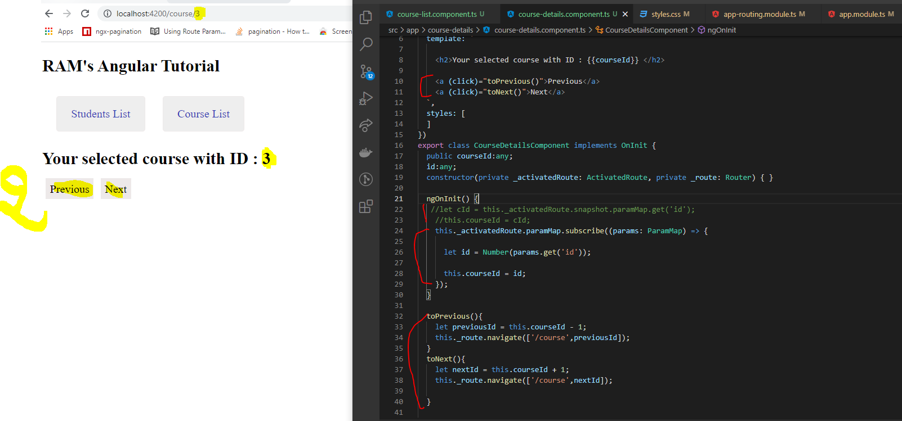

<div class="contentStyle">
    <h2 class="inTittle">PARAMMAP OBSERVABLE</h2> 

    <ul>
        <li>Previous class, we used 'snapshot' but it created issues while routing the next & and previous.<li> 
        <li>To avoid these issues, use the paramMap Observables instead of a snapshot and subscribe the same like below.</li>
        
        
    </ul>

</div>